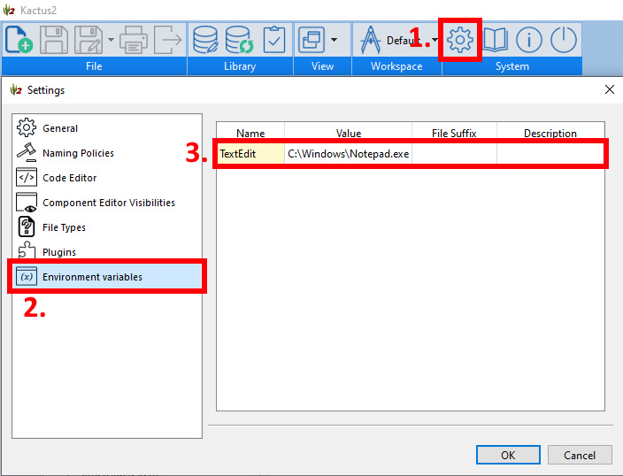
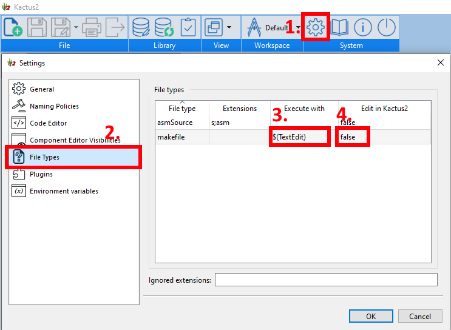

Default Application
You may select the default application for each file type within Kactus2. For instance, this could be the default text editor for makefiles.
- Open settings.
- Select Environment variables.
- Double click to create a new row, set the name for the new variable, and set field value as the path to the program.

- Select File Types.
- Go to the row of the desired file type. Set field Executed with as the variable in format $(VARIABLE_NAME).
- You may also opt to edit the file type within the built-in text editor of Kactus2, although this should be considered mostly as a fall-back.
